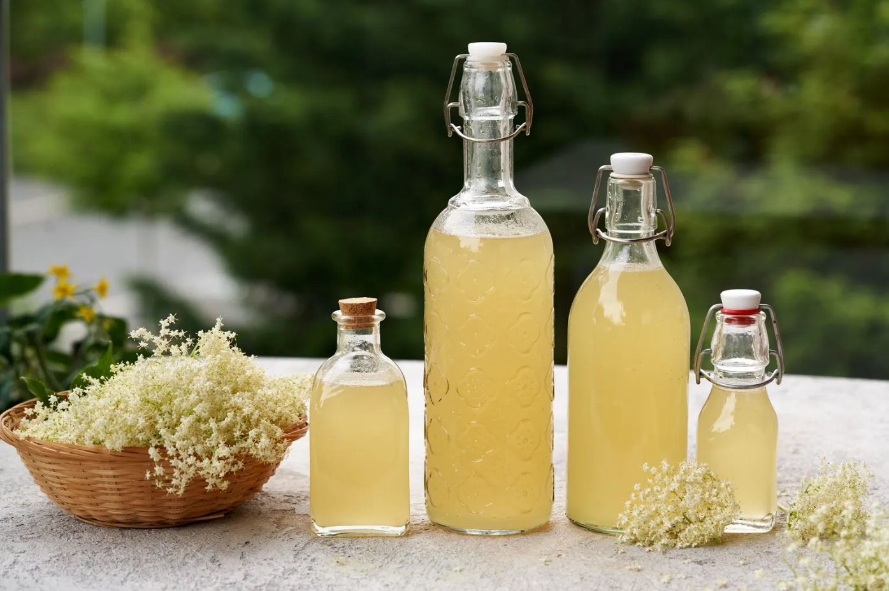

Shop
Nell’azienda agricola è presente un piccolo spaccio di prodotti locali.
Sono presenti diversi stakeholder di aziende locali interessate ad esporre e vendere la loro produzione all’interno dell’azienda.
Inoltre sono in vendita anche i prodotto ottenuti dalle materie prime coltivate all’interno dell’azienda, una parte dei prodotti è proprio quella che viene prodotta mediante le attività della fattoria didattica
Il raccolto del vigneto viene inviato alla società ViVo cantine dove viene usato insieme ai raccolti di altri soci per produrre vino
|
 |
Sciroppo di sambuco
Ingredienti: fiori di sambuco, acqua, limoni, zucchero 10.00€ al L |

|
Grappa di mirto
Ingredienti: grappa bianca, mirtilli e zucchero 20.00€ al L |
|
|
Nocino
Ingredienti: malli di noce verdi, alcool buongusto, zucchero, acqua, cannella e limone 17.00€ al L |

|
Marmellata di pesche
Ingredienti: pesche, zucchero e limone 4.50€ per 270g |

|
Marmellata di pere
Ingredienti: pere, zucchero e cannella 4.50€ per 270g |

|
Marmellata di fichi
Ingredienti:fichi, zucchero e limone 4.50€ per 270g |

|
Pesto
Ingredienti: basilico fresco, pinoli, parmigiano, pecorino, aglio, olio di oliva e sale 6.50€ per 200g |

|
Salsa di pomodoro
Ingredienti: pomodori, cipolla, aglio, olio di oliva e sale 5.50€ per 200g |

|
Ragù di maiale
Ingredienti: carne di maiale, cipolla, sedano, carota, vino rosso, pomodoro, olio di oliva, sale e pepe 6.50€ per 200g |

|
Pancetta
9.00€ al Kg |

|
Salame
14.00€ al Kg |

|
Verdure di stagione |

|
Frutta di stagione |

|
Rivendita prodotti da forno locali |

|
Rivendita vini |
ALTRI PRODOTTI IN ARRIVO
CONTATTI:
Tel 0421275123
Email info@aziendaagricolafurlanis.it